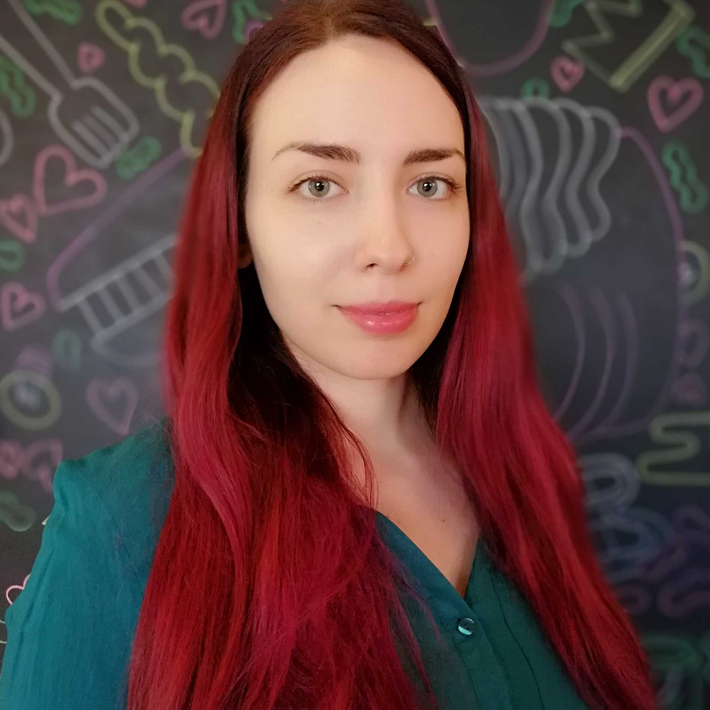
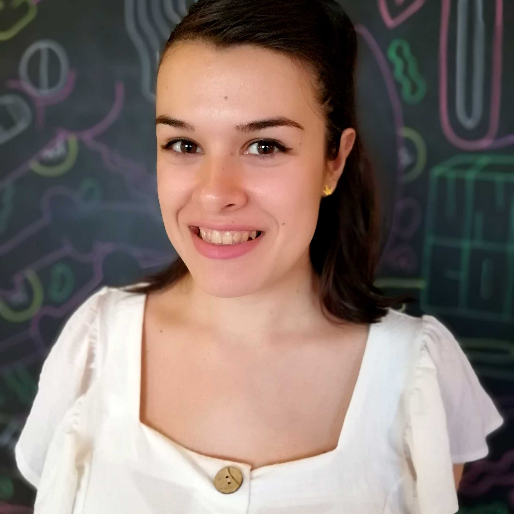
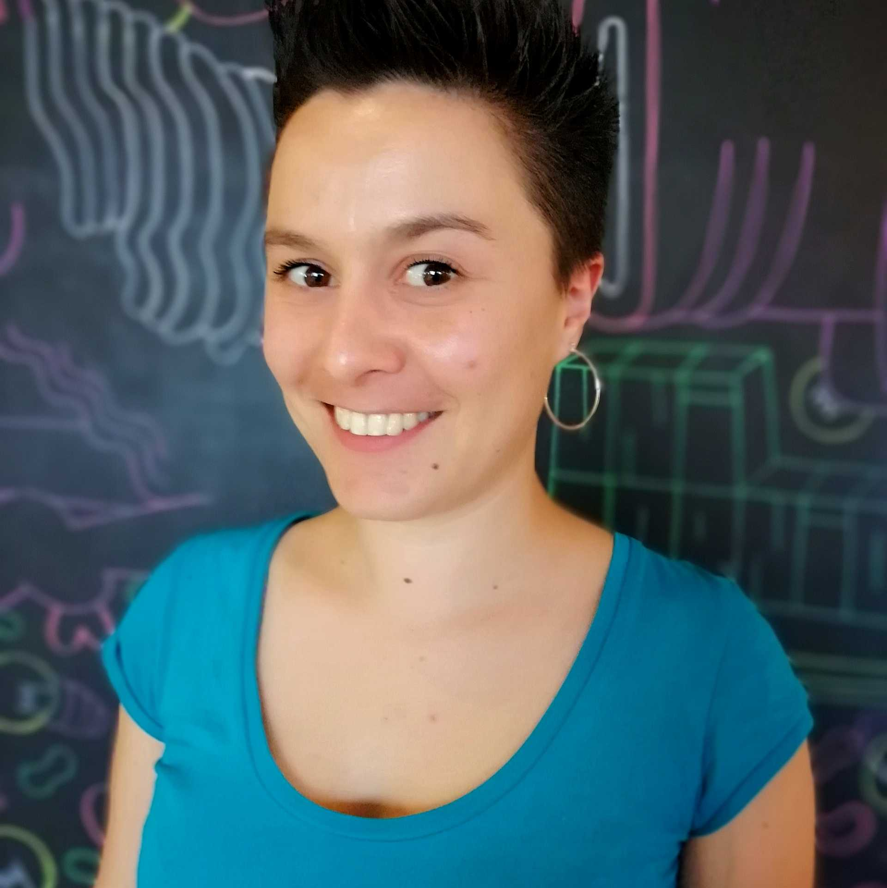
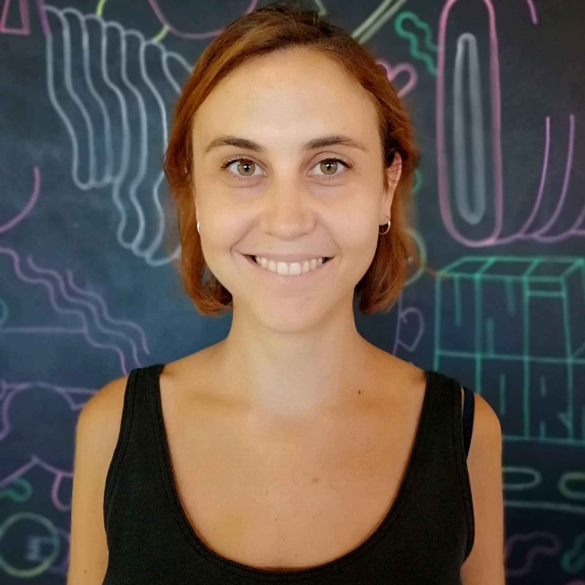

“Individually, we are a drop. Together we are an ocean”, Ryunosuke Satoro
EQUIPO
Somos un grupo de mujeres formadas en los más diversos ámbitos que hemos decidido dar un giro a nuestras vidas para convertirnos en profesionales en desarrollo web.
Vamos a construir nuestro futuro aprendiendo de nuestras compañeras y de la comunidad, y a demostrar que las mujeres dentro del mundo digital ¡ya no son una rareza!
QUIÉNES SOMOS
-

Alexandra
Conocí la programación front-end antes de realizar mis estudios de Imagen y Sonido, cuando `b` e `i` estaban de moda. Soy perfeccionista, proactiva y autoexigente. Creo firmemente que el futuro es tecnológico, y he decidido adaptarme a él de la mano de Adalab.
-

Alba
Vengo del mundo creativo. Como diseñadora de moda puedo aportar el gusto por las cosas bien hechas, la perseverancia y los buenos detalles. Mi éxito como desarrolladora web será la motivación, el esfuerzo y la constancia. Amante del arte, el diseño y del constante aprendizaje.
-

Beatriz
Llegue al mundo del diseño gráfico por ser curiosa y tratar de encontrar soluciones creativas a diferentes problemas. Un día el mundo digital llamo a mi puerta y decidí subirme este tren de la mano de Adalab para seguir mi camino como desarrolladora front-end.
-

Rocío
Formada en Derecho y mediación de conflictos, bibliófila y cinéfila, mi autodefinición como persona de letras se desmoronó de golpe cuando descubrí la programación y fue amor a primera vista. Llena de curiosidad por todo lo que me rodea, perseverante y en reinvención continua, estoy fascinada por los conocimientos que estoy adquiriendo y decidida a formar parte de ésta comunidad.
-

Cristina
Me considero una persona paciente y trabajadora cual hormiguilla, que se adentra en el apasoinante mundo del front de la mano de Adalab. Tras trabajar dos años en el mundo del back, he decidido enfocar mi carrera profesional en el marco digital, porque me apasiona. Graduada en Ingeniería de Sistemas de Comunicaciones en la universidad Carlos III de Madrid.